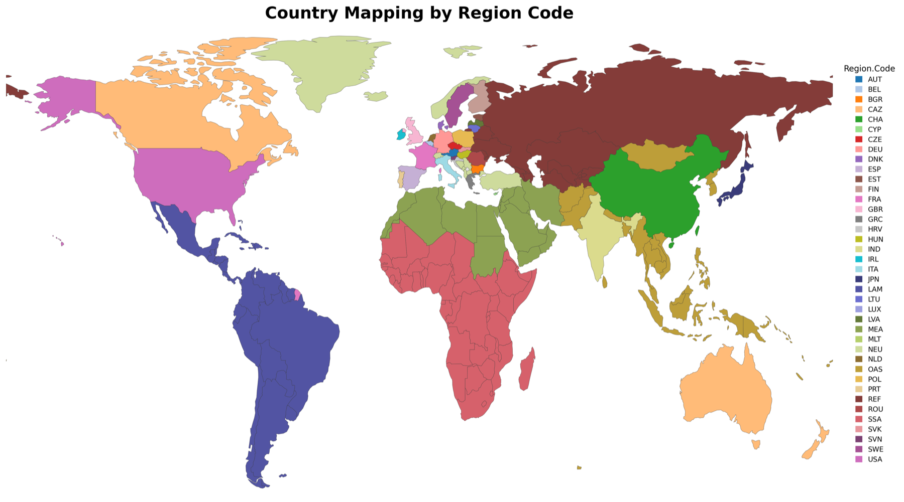
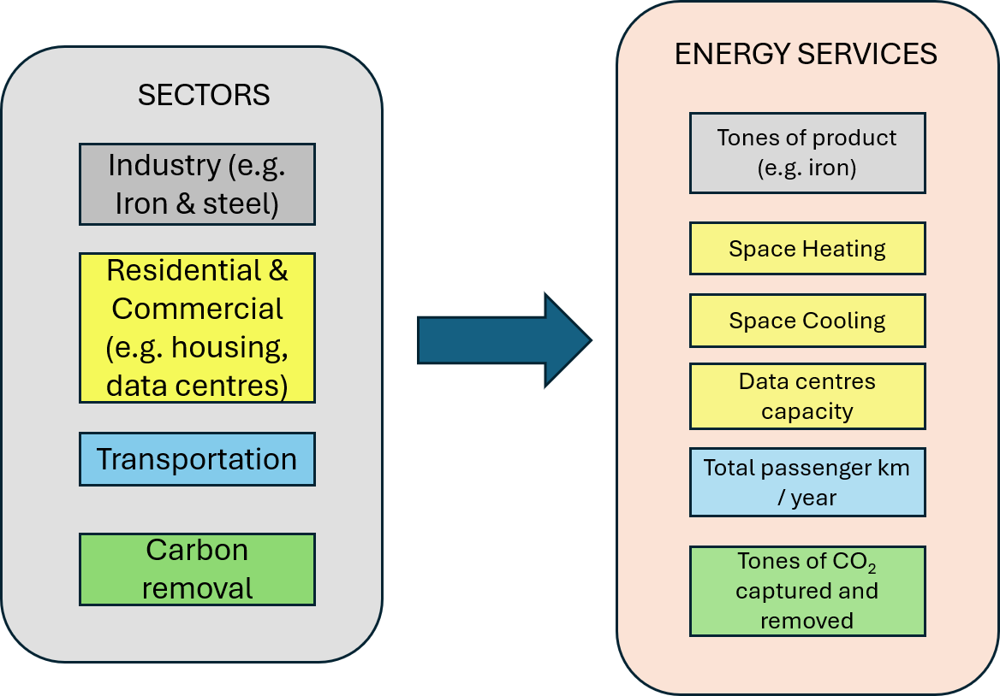
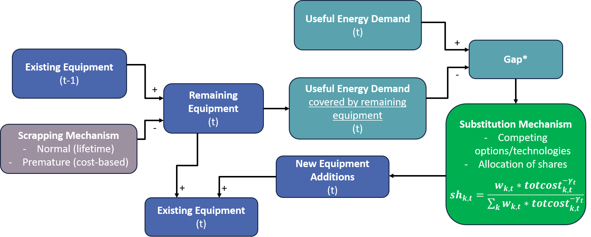
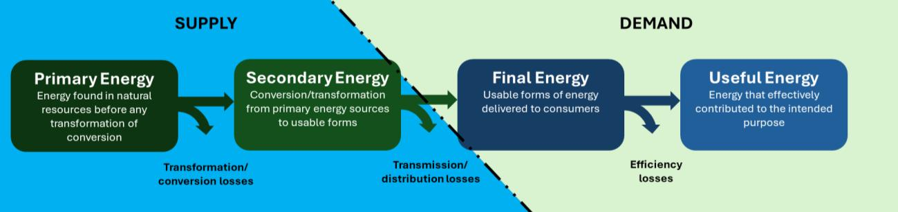

2. Model overview
Note
In brief — OPEN-PROM is a recursive-dynamic energy-system simulation model. This chapter covers its time and regional resolution, sectoral granularity, the gap-and-substitution mechanism, price formation, and energy supply.
OPEN-PROM is a recursive dynamic simulation model. Within this framework, variables are calculated based on their values from previous years, adjusted for the evolution of explanatory variables (“drivers”) and other exogenous inputs and parameters. This structure enables the model to simulate year-by-year developments in the energy system while accounting for path dependencies, capturing both short- and long-term transition dynamics.
As a comprehensive energy demand and supply simulation tool, OPEN-PROM supports a wide range of applications, including energy system analysis, energy price projections, power generation planning, industrial transformations, and the assessment of climate change mitigation policies. The OPEN-PROM modelling ecosystem is complemented by mrprom, which serves as the input data management repository, providing external datasets covering energy balances, technology characteristics, fuel prices, power generation capacities, environmental policies, macroeconomic indicators, and other sector-specific information. In addition, postprom provides the post-processing framework developed to support the analysis, validation, visualisation, and dissemination of results generated by the OPEN-PROM modelling platform. Together, OPEN-PROM, mrprom, and postprom constitute an integrated framework for energy system modelling, data management, and results analysis. The following subsections provide a detailed overview of the model’s energy demand and energy supply components.
2.1. Time granularity and regions
OPEN-PROM performs 1-year step simulations, beginning from 2024 to 2100, using data of historical years from 2010. The 1-year resolution is critical for short-term realism, but less so for the long term, so it is planned to change the late-horizon resolution to 5-year steps.
The model has global coverage. The world is split into 39 individual countries and regions, with flexible spatial disaggregation (country-level being the minimum level of detail), based on both technical and contextual considerations. EU member states are modelled individually to enable detailed analysis of the EU’s industrial transformation in the context of net-zero analysis. Major global economies are also represented individually, while regions with similar geographical and socioeconomic characteristics are grouped together. This regional aggregation is compatible with established global models (e.g. MAgPIE), facilitating both the linking of the models and the comparison of results. The current regional breakdown is shown in Fig. 2.1 and the table below.
In research mode the model solves this full 39-region set (resCy in core/sets.gms). The wider country
list (allCy) additionally contains RWO (“rest of world”), a dummy element retained for the lighter
development and smoke-test workflows rather than for the standard research configuration.
Important
During the DIAMOND project the start year of the simulation moved from 2021 to 2024, adding short-term realism, and the spatial resolution expanded from 15 to 39 regions.
{kind=link}

Fig. 2.1 Regional coverage of OPEN-PROM.
Region |
Region |
|---|---|
Austria |
Japan |
Belgium |
Latin America and the Caribbean |
Bulgaria |
Lithuania |
OECD Pacific and North America |
Luxembourg |
China |
Latvia |
Cyprus |
Middle East, North Africa |
Czech Republic |
Malta |
Germany |
Europe (non-EU) |
Denmark |
Netherlands |
Spain |
Other Asia |
Estonia |
Poland |
Finland |
Portugal |
France |
Reforming Economies of Former Soviet Union |
United Kingdom |
Romania |
Greece |
Sub-Saharan Africa |
Croatia |
Slovakia |
Hungary |
Slovenia |
India |
Sweden |
Ireland |
United States |
Italy |
2.2. Sector granularity
Energy demand is modelled in terms of useful energy services, such as heating, mobility, industrial production of materials (e.g. steel or cement), and appliance use, and their corresponding final energy carriers. The model ensures a consistent energy balance by linking useful and final energy through technology-specific efficiencies.
Energy demand is divided into three main demand sectors — industry, domestic, and transport — but also includes the non-energy sector and bunkers (international shipping and aviation), as shown in the table below.[6]
Demand for useful energy services (Fig. 2.2) (useful energy demand) is determined at the subsector level with an econometric top-down approach, where demand for useful energy services is driven by appropriate macroeconomic factors (e.g. GDP, population, household income, industrial activity) and the average cost of providing these services, based on econometrically derived elasticities differentiated by sector and country/region. In the context of TRANSIENCE, new data have been used (on industrial production, industrial energy demand, and energy prices) and new econometric estimations have been implemented to estimate updated values for the elasticities used in the relevant model equations.
Sector |
Subsector |
|---|---|
Industry |
Iron and Steel; Non-Ferrous Metals; Chemicals; Non-Metallic Minerals; Pulp and Paper; Food, Drink and Tobacco; Engineering; Textiles; Ore Extraction; Other Industrial Sectors |
Domestic |
Services and Trade; Agriculture, Fishing, Forestry etc.; Households |
Transport |
Passenger Transport – Cars; Passenger Transport – Buses; Passenger Transport – Rail; Passenger Transport – Inland Navigation; Passenger Transport – Aviation; Goods Transport – Trucks; Goods Transport – Rail; Goods Transport – Inland Navigation |
Non-Energy |
Petrochemicals Industry; Other Non-Energy Uses |
Bunkers |
Bunkers |
{kind=link}

Fig. 2.2 OPEN-PROM sectors and their energy services.
A typical useful energy demand equation is used to estimate the evolution of total demand for useful energy services[1] for each subsector in OPEN-PROM, and has the following form:
- \(DEM\)
useful energy demand
- \(ACT\)
activity indicator (e.g. industrial production value for industrial subsectors, disposable household income for the residential subsector) that drives changes in energy demand
- \(AVPrice\)
weighted sum of the costs of different options / average cost of meeting energy services[2]
- \(\alpha\)
trend parameter capturing exogenous growth or decline in demand not explained by activity or costs
- \(\beta\)
elasticity with respect to the activity indicator
- \(\gamma_{l}\)
lagged weighted elasticities with respect to changes in the average energy cost
- \(i\)
subsector
- \(t\)
year
This formulation captures how the future development of energy demand by sector depends not only on changes in economic/activity levels (“drivers”), but also on the evolution of average energy-related costs over time. The inclusion of lagged elasticities, which are weighted to reflect the relative importance of cost changes at different time lags, allows the model to represent delayed responses of energy demand to cost changes, reflecting short- and medium-term adjustment processes. Even when the activity indicator (e.g. industrial production) increases, the rising costs of meeting energy services can dampen or even reverse the growth in energy demand. This occurs through mechanisms such as improved energy efficiency, substitution to less energy-intensive processes or technologies, and behavioural or structural shifts in production. As a result, the model reflects the dynamic interplay between economic growth and cost-induced efficiency or demand adjustments.
Useful energy requirements at the subsector level must be met through the consumption of final energy commodities, accounting for the efficiency of the technologies and the fuels used.
In the model, a representative agent acts as an aggregate, rational decision-maker within each subsector, reflecting the collective behaviour of firms or consumers in that subsector. This agent is assumed to make cost-effective and technically feasible choices among fuels, technologies, and energy-saving measures, while considering existing infrastructure, policies, and equipment. More information regarding substitution between technologies and energy forms is provided in the Gap and substitution mechanism section. Final energy demand is then derived from useful energy requirements and the efficiency of the selected options (technology/fuels):
- \(FE_{i,k}\)
final energy of technology/fuel \(k\) in subsector \(i\)
- \(UseDemRemEquip_{i,k}\)
useful demand covered by installed equipment[3] of technology/fuel \(k\) available in year \(t\) (see the scrapping mechanism in the Gap and substitution mechanism section)
- \(GAP_{i,t}\)
the gap in useful energy demand in subsector \(i\) (see the Gap and substitution mechanism section)
- \(sh_{i,k}\)
the share of technology/fuel \(k\) in new equipment in subsector \(i\)
- \(eff_{i,k}\)
the efficiency of technology/fuel \(k\) in subsector \(i\)
Note
The expression above is the substitutable-demand core: it covers the fuels and technologies that compete to
fill the gap. In the code, total final energy (Q03FinalEnergy) adds several non-substitutable terms on top of
this core — non-substitutable electricity in industry and tertiary (V02FinalElecNonSubIndTert), heat-pump
electricity (VmElecConsHeatPla), transport fuel consumption (V01ConsFuelTransport), and the fuel used by
carbon-dioxide-removal technologies (direct air capture and enhanced weathering).
2.3. Gap and substitution mechanism
The energy-related equipment (e.g. power plants, passenger cars, or heating boilers) available in each period, on both the energy supply and the demand side, represents the installed technologies that can actively produce and consume energy, respectively. This includes power plants, heating systems, industrial machinery, vehicles, and end-use appliances that remain operational based on their technical lifetimes and usage patterns. As the energy system transitions towards net-zero, this equipment is gradually retired — either through normal scrapping at the end of its lifetime, through premature scrapping when changes in variable and fuel costs render the continued operation of energy equipment economically unviable, or through retrofitting. This process reduces the share of demand and supply that can be met by existing assets and creates a “gap” that must be filled by new equipment. For useful energy services that can be provided by multiple technology options (subject to fuel and technology substitution) and for supply sectors such as power generation and hydrogen production, this gap is addressed by selecting among competing alternatives[4]. In OPEN-PROM, this selection is governed by the model’s substitution mechanism, developed in the context of DIAMOND.
Without loss of generality, both the gap and the substitution mechanism discussed in the following sections are analysed from the demand perspective. A similar approach is applicable to the energy supply sectors.
See also
The same gap-and-substitution mechanism applies on the supply side — see Power supply.
{kind=link}

Fig. 2.3 Architecture of the gap-and-substitution mechanism.
2.3.1. Gap and scrapping mechanism
Note
The gap, scrapping, total-cost, and share (Weibull) equations in this section are a conceptual algebra common to all sectors. The active GAMS implementation is realisation-specific: each demand and supply module spells these out with its own variable names, cost-sensitivity exponents, and special terms. Implementation by realisation maps the generic forms onto the active equations.
The gap is defined in terms of useful energy and is determined by the difference between useful energy demand (\(DEM_{i,t}\) — the useful energy demand equation) and the amount of energy that can be satisfied using existing equipment:
In the equation above, \(CAP_{i,t}\) represents the useful energy satisfied by the capacity of the equipment of subsector \(i\) which has been installed by year \(t-1\) and is not scrapped in year \(t\) (remaining equipment), and is defined as follows:
where the summation includes all competing technologies \(k\), \(DEM_{i,k,t-1}\) stands for the demand satisfied by technology \(k\) in year \(t-1\), and \(SCR_{i,k,t}\) is the overall scrapping rate of technology \(k\) in year \(t\), which includes normal scrapping (\(norscr_{i,k,t}\)), premature scrapping (\(prescr_{i,k,t}\)) and retrofitting (\(retrscr_{i,k,t}\)). The inclusion of the two latter, premature scrapping and retrofitting, is important for capturing rapid technological transformation, particularly under scenarios involving strong climate action or sharply rising fossil fuel prices, where the renewal of the equipment stock accelerates.
Premature scrapping takes place when a plant becomes economically unfeasible compared to other technologies, often due to policy changes or fluctuations in international fuel prices. Retrofitting involves upgrading an existing plant by installing CCS technology. Unlike the other mechanisms, retrofitting does not withdraw plants; instead, it transforms a conventional thermal plant into a CCS-equipped plant. The general algebraic formulations[5] for the scrapping rates are the following:
Normal scrapping:
Premature scrapping:
Retrofitting scrapping:
where \(norscr_{k,t}\) is the normal scrapping rate of technology \(k\), \(lft_{k}\) is the economic lifetime of technology \(k\), and \(prescr_{k,t}\) is the premature replacement rate of technology \(k\); \(vom_{k,t}\) is the variable (including fuel) cost of technology \(k\) and \(totcost_{j,t}\) is the total cost of using technology \(j\) including capital and variable costs (index \(j\) represents all competing technologies in a sector \(i\) excluding technology \(k\)). \(k'\) is the competing CCS technology of technology \(k\) (e.g. Coal CCS for Coal). The factors \(h_{k,t}\) and \(a_{k,t}\) are stochastic and used for scaling purposes, and \(\gamma_{t}\) (also stochastic) is a measure of the sensitivity of investment decisions to cost considerations. Premature scrapping is included to capture technology turnover and enable the model to respond to sudden changes in carbon or fuel prices, avoiding lock-in and encouraging continuous improvement. It is modelled by comparing the operating costs (OPEX) of existing technologies with the total levelised cost of electricity (LCOE) of new investments; if the new option becomes more cost-effective, early replacement is enabled.
In most cases, demand for useful energy services increases, or does not decline faster than total scrapping, resulting in a positive “gap”. However, in cases where demand for useful energy services is lower than the amount that can be met by existing equipment, the gap is assumed to be zero, and no competition between technologies occurs.
2.3.2. Substitution mechanism
Competition between technologies occurs in terms of market shares within the gap. The allocation of new investments is modelled as a quasi-cost-minimising function and is driven by the total cost of the competing options. The total cost of technology \(k\) at time \(t\) is expressed as:
where \(cc_{k,t}\) is the capital cost, \(fc_{k,t}\) is the fixed cost for operation and maintenance (O&M), \(vom_{k,t}\) refers to the variable costs of O&M, \(eff_{k,t}\) is the efficiency factor, \(ur_{k,t}\) is the utilisation rate, \(fuelprice_{k,t}\) is the price of the energy source used by technology \(k\), \(dr_{t}\) is the discount rate (a function of long-term interest rates), and \(lft_{k}\) is the economic lifetime of technology \(k\).
The shares of each option \(k\) in the gap for the year \(t\) are calculated as follows:
The equation above (Weibull specification) determines the market share in the gap of technology \(k\) based on its total cost \(totcost_{k,t}\). In this specification, the parameter \(\gamma_{t}\) represents the sensitivity of the share in the gap with respect to the total cost of each technology, while the weights \(w_{k,t}\) can be interpreted as reflecting the relative “maturity” factor of each technology in terms of the readiness of consumers to adopt it. These factors play an important role in modelling the process of technology diffusion.
Tip
The term quasi-cost-minimising highlights that investment decisions are not strictly determined by selecting only the lowest-cost technology. Instead, the chosen mechanism favours cheaper options but still allocates some share to more expensive or less mature technologies, preventing the “winner takes it all” assumption prevalent in linear optimisation models. This better reflects real-world behaviour, where decisions are influenced by inertia, preferences, uncertainty, and imperfect information, allowing for smoother, more realistic technology adoption pathways.
2.3.3. Implementation by realisation
The table below maps the generic gap/scrapping/cost/share algebra onto the active equations in each module, with the cost-sensitivity exponent (\(-\gamma\)) and the distinctive terms each one uses. A common device across modules is the non-negative-gap transform \(\tfrac{1}{2}\!\left(x + \sqrt{x^{2}}\right)\), which clips a negative gap to zero.
Module (realisation) |
Share / scrapping equations |
Cost exponent |
Special terms |
|---|---|---|---|
Industry & tertiary ( |
|
\(-i02ElaSub\) (country/sector-specific) |
Remaining-equipment demand |
Power generation ( |
|
\(-2\) |
Decommissioning schedules ( |
Hydrogen ( |
|
\(-i05WBLGammaH2Prod\) |
Normal scrapping \(1/i05ProdLftH2\) gated by plant age; premature replacement on variable cost
|
Steam / heat ( |
|
\(-2\) |
Normal scrapping \(1/i09ProdLftSte\); scaling factor |
2.4. Prices
Warning
The next three paragraphs describe the conceptual intent of the Prices module as written for the DIAMOND project. The active code does not implement an iterative supply–demand tâtonnement: there is no loop that raises or lowers a price until demand equals supply. Prices are instead propagated recursively from the previous year’s values. Read this part as legacy/conceptual context; the active mechanism is set out under Active price formation (current code).
2.4.1. Conceptual framing (legacy)
The prices calculation, developed during the DIAMOND project, plays a central role in achieving market equilibrium by determining the energy prices that balance supply and demand across all fuels and sectors. It calculates both primary energy prices — such as for crude oil, natural gas, and coal — and the final consumer prices paid by each sector. The module receives aggregate demand data from the power, industry, transport, and hydrogen modules, and compares it against available supply, which is either derived from predefined regional supply cost curves or given exogenously. Using an iterative adjustment process, the module ensures that for each fuel the equilibrium price is identified such that total demand matches total supply. This market-clearing procedure is executed independently for each simulation year in a partial-equilibrium, myopic framework.
Beyond determining primary fuel prices, the module computes final energy prices by incorporating additional cost components, including refining margins, transmission and distribution tariffs, and taxes or subsidies. These are differentiated by sector and region, allowing for policy-specific impacts such as tax exemptions for industry or elevated household energy taxes. For instance, the price of gasoline in the transport sector reflects the international oil price, refining and retail costs, and applicable fuel taxes. Similarly, the final electricity price includes generation costs from the power module, grid fees, and levies. Hydrogen prices integrate production costs, storage, and delivery margins. The final prices are passed to the demand modules to influence technology choices, fuel switching, and energy consumption decisions.
During each iteration of the model solution, if the module detects excess demand for a fuel, it increases the corresponding price to dampen consumption and stimulate supply. If there is oversupply, it lowers the price accordingly. This tâtonnement process continues until balance is achieved across all energy markets. Additionally, the Prices Module implements carbon pricing by adding a CO₂ cost to the price of fossil fuels in proportion to their emissions intensity, thereby incentivising low-carbon alternatives throughout the system. It can also reflect regulatory measures such as subsidy phase-outs or energy price reforms. Ultimately, the Prices Module is critical for transmitting economic signals between supply and demand components and for ensuring the internal consistency of the integrated model solution.
2.4.2. Active price formation (current code)
The active Prices realisation (modules/08_Prices/legacy) is recursive index propagation, not market
clearing. The central equation Q08PriceFuelSubsecCarVal sets each subsector–fuel price for year \(t\) by
multiplying the previous year’s price by a set of fuel-specific factors and then adding a carbon-value increment:
Electricity, hydrogen, steam are scaled by the year-on-year ratio of their average production cost (
VmCostPowGenAvgLng,VmCostAvgProdH2,VmCostAvgProdSte).Fossil fuels are linked to the oil-price index through fixed elasticity exponents on the crude-oil price ratio: natural gas \(0.4\), liquids \(0.8\), hard coal and lignite \(0.2\). The crude-oil price itself is exogenous (read from
CrudeOilPrice.csv) and scenario-dependent.Carbon pricing enters as an additive increment proportional to the change in carbon value times the fuel’s emission factor, \(10^{-3}\,(CarVal_{t}\,emiFac_{t} - CarVal_{t-1}\,emiFac_{t-1})\), applied in the demand subsectors.
Final-stage equations then build sector-average prices (Q08PriceFuelAvgSub) and the industrial electricity price
(Q08PriceElecInd) on top of these.
Biomass (BMSWAS) is priced through one of three compile-time modes, derived in main.gms from the
softLinkMAgPIE and landUseEmulator switches:
static(softLinkMAgPIE=off,landUseEmulator=legacy) — BMSWAS follows the same recursive price dynamics as every other fuel.curve(softLinkMAgPIE=off,landUseEmulator=globiom/magpie) — BMSWAS price is driven by a fitted land-use supply curve \(P = a + b\,Q^{c}\), applied as a year-on-year scarcity ratio on lagged primary biomass production. The coefficients come fromimBmswasSupplyCoef(loaded fromiBmswasSupplyCoef_<source>.csv, produced by mrprom), with the active carbon-price row picked byemulatorGHGScen.softfx(softLinkMAgPIE=on) — BMSWAS is excluded from the price equation entirely; its price is fixed (.FX) toiPricesMagpiefrom the MAgPIE soft-link incore/preloop.gms.
The determination of prices is done endogenously through a combination of complementary mechanisms. For energy carriers with a detailed supply representation (electricity, hydrogen, and heat) prices are derived from the average cost of production per unit of energy. This serves as a region-specific index reflecting underlying price dynamics. In addition, an oil price index is incorporated to capture the influence of global fossil fuel markets. This index is linked to individual fuels through elasticity parameters estimated using econometric methods. The international oil price itself is treated exogenously and varies according to the scenario design (e.g. constant prices or standard price trajectories). Furthermore, carbon pricing effects are explicitly accounted for by applying incremental increases in fuel prices proportional to changes in carbon prices in the sectors where carbon costs are imposed. These effects are also region-specific, ensuring consistency with regional policy frameworks.
2.5. Energy supply
The OPEN-PROM energy supply module ensures the closure of energy balances at the regional and national levels. Net production, accounting for net trade flows, is derived from gross inland consumption and is disaggregated into primary and secondary energy products across supply sectors.
{kind=link}

Fig. 2.4 Energy flow from supply to end use: from primary to useful energy.
2.5.1. Trade representation
The current trade mechanism is based on a static formulation calibrated to historical data:
Exports are determined by using each country’s historical share in global energy trade. These shares are assumed to remain constant over time, following historical dynamics.
Imports are calculated as a fixed ratio of total inland consumption, based on historical observations. As a result, import levels evolve proportionally with the region’s energy demand.
Future enhancements will introduce a dynamic trade mechanism, allowing for competition between countries. In this framework, countries will compete to supply global energy demand based on relative domestic prices, improving the realism of trade allocation.
Warning
Trade is currently represented by a static, historically-calibrated formulation. A dynamic, price-based trade mechanism that lets countries compete to supply global demand is planned future work.
2.5.2. End-use sector: biofuel blending
In the end-use sectors, the model incorporates an endogenous representation of biofuel blending in conventional fuels (e.g. biodiesel in diesel), which was developed during the DIAMOND project. Fuel shares are determined by a logit function, where fuels compete based on their relative prices. To ensure consistency with observed data, an additional calibration parameter is introduced. This parameter serves two purposes: (i) it aligns modelled fuel shares with historical values, and (ii) it imposes technical constraints that limit the rapid penetration of high biofuel shares in fuel blends.
This mechanism is particularly relevant under decarbonisation scenarios (e.g. net-zero pathways), where fossil fuel prices increase due to carbon pricing policies while biofuel prices are primarily driven by the biomass supply curve. The existing modelling structure provides a robust foundation for future extensions, including the integration of synthetic fuels into the end-use fuel mix, using the same competition-based framework.